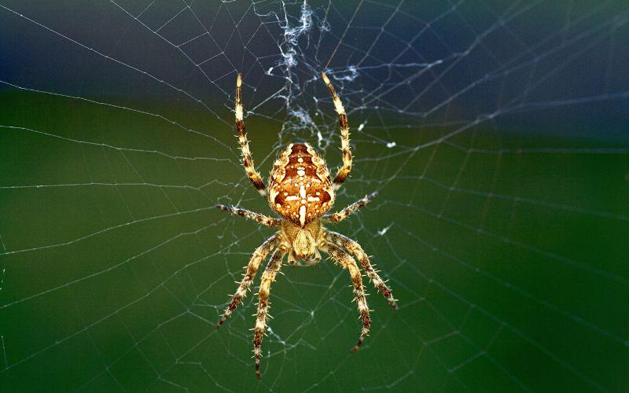

| ANIMAL |
DESCRIPCIÓN |
IMAGEN |
| GATO |
Los gatos son una de las mascotas que más aceptación tienen entre las personas, junto con los perros. Estos felinos tienen una forma de ser muy diferente de la de estos caninos, algo que les hace ser muy especiales, tanto por su actitud, como también por sus características que en breve te explicaremos. |
|
| MARIPOSA |
Las mariposas son el nombre común por el que se conocen a los insectos que se incluyen dentro del orden de los lepidópteros (proviene del griego «lepis», escama, y «pteron», ala), que se traduce en “ala de escama”. Las más conocidas por sus motivos coloridos son las mariposas diurnas, pero la mayoría de las especies son nocturnas (polillas, esfinges, pavones, etc.), aunque estas pasan en ocasiones desapercibidas. |
|
| ARAÑA |
Las arañas son un grupo de organismos pertenecientes al orden Araneae. Se caracterizan principalmente por poseer apéndices articulados, distribuidos en dos pares de quelíceros, dos pares de pedipalpos y cuatro pares de patas. |
 |
| CONEJO |
Los conejos son unos animales que son muy conocidos en todo el mundo y que llevan durante muchos años formando parte de la vida de los humanos siendo unas mascotas ideales por su sociabilidad, su forma de demostrar cariño y por la facilidad que tienen para ser domesticados, siendo cada día más uno de los animales que más se compran en las tiendas de animales. Gracias a esta categoría vas a aprender muchas cosas nuevas sobre los conejos, desde qué comen, cómo diferenciar si es un macho o una hembra, o los distintos tipos de razas que existen en la actualidad. |
|